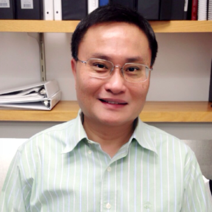

<div class="container">
    <div class="row">
        <div id="speaker-detail" class="col-lg-6 col-lg-offset-3">
            <div class="row">
                <button title="Close (Esc)" type="button" class="mfp-close">×</button>
                <div class="col-md-4 col-lg-4">
                    
                    <br />
                </div>
                <div class="col-md-8 col-lg-8">
                    <h2>Wei Lien Chuang, Ph. D.</h2>
                    <h3>Principle Scientist, Analytical Chemistry, Sanofi</h3>
                    <p>Dr. Chuang has more than fifteen years of working experience in the pharmaceutical industry. In his current position, he focuses on using mass spectrometry and nuclear magnetic resonance to apply lipidomics and metabolomics for biomarker discovery. Another area of interest is discovery bio-analysis with particular focus on protein and antibody pharmacokinetics and toxicology. Prior than that, Dr. Chuang had ten years of experience in academic research. Dr. Chuang received his PhD in Chemistry from the University of California, Riverside. He then completed his postdoctoral research at the University of California, San Francisco. He joined Genzyme/Sanofi in 2004.
                    </p>
                </div>
            </div>
        </div>
    </div>
</div>